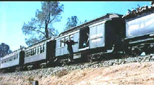
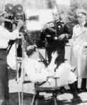

| //C+,CRage
at Dawn/C+,D |
| Roan/1955/86m/ANA
1.85 |
For Western
lovers, Rage at Dawn is nothing more than a standard
oater. The chief asset is the always solid Randolph Scott, but
Scott gets to show off less of his Western hero mettle in this
movie. You don't even get the star until more than 25
minutes into the film
|
 |
| A
stunt well timed. ©Roan |
The rolling title
credits the film as the true story of the Reno brothers, purportedly
the first train robbers in American history. They are just
a bunch of mugs doing the bidding of the corrupt town officials.
Somebody's got to stop these bad boys from ruling the roost. Jim
Barlow steps up to the plate as an agent sent from Chicago to
infiltrate the band of outlaws and catch them in flagrante
delecto, so to speak.
Probably the most powerful sequence is
when an angry town gets out of hand to form a lynch mob.
Somehow, this sequence seems out of character with the rest of
the shoot 'em up style of the film and is rather jarring. But,
it's a lot better than the insipid romance hustled into the
script between agent Jim Barlow and
Reno sister Laura. The big shoot 'em up finale lasts
about six minutes with enough bullets blasting to forge a brand
new steam engine.
Production values are okay, but
everything, from the script to the direction to the photography
is ordinary. Even the music strains to achieve "B" Western bombast,
embellishing the action with more notes than bullets.
Scott's square jaw style of acting gets
support from Forrest Tucker as big Frank Reno, while J. Carrol
Naish lays on the ham as Sim Reno. Mala Powers looks good as
Laura Reno, but the task of conjuring up a romance with Barlow
is too much for any actress.
The package
claims "Was restored from original Technicolor
material." What constitutes a restoration? Maybe the
elements used by Roan were so substandard that even this mess of
a DVD transfer could be called a restoration. But, the
implication is clearly that this DVD transfer should look
reasonably good; forget about it. The elements used for transfer
are in miserable shape and the while the "restoration"
may clean up some of the mess of dirt and scratches, it softens
the picture with disastrous results. The picture pulses
and jumps. The color is pretty good, at least, but everything
has a flattened out look, like it was washed with acid contempt
for the true look and feel of film.
|
|

The
Feature
Archive has articles ranging from Akira
Kurosawa to Blonde
Bimbos.

Click on the image above for a
"dream interview" with director John
Ford.

 Direct
from the corridors of the Home
Theater Forum, Home Theater Talk is
the newest place on the Net to
discuss everything home theater.
Friendly atmosphere and
knowledgeable folks are the secret
ingredients. Direct
from the corridors of the Home
Theater Forum, Home Theater Talk is
the newest place on the Net to
discuss everything home theater.
Friendly atmosphere and
knowledgeable folks are the secret
ingredients.
 Gary
Morris's insightful publication Bright Lights Film Journal
turns the celluloid in films from a unique perspective. Click on the image above for more pure movie views. Gary
Morris's insightful publication Bright Lights Film Journal
turns the celluloid in films from a unique perspective. Click on the image above for more pure movie views.
It
rains a lot in Portland, so DVDcorner.net
provides an umbrella of entertainment with the online DVD sales.
 . .
The
Movie Poster Archive include extensive poster images from the
films of stars like Susan Hayward, Kirk Douglas, Katharine
Hepburn and many more. This month's featured star is John
Wayne
|